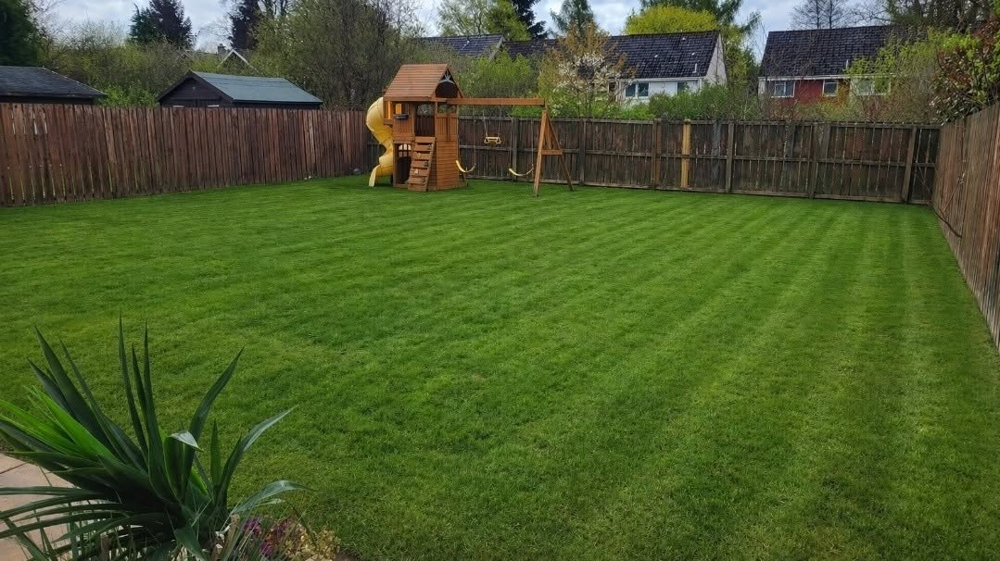
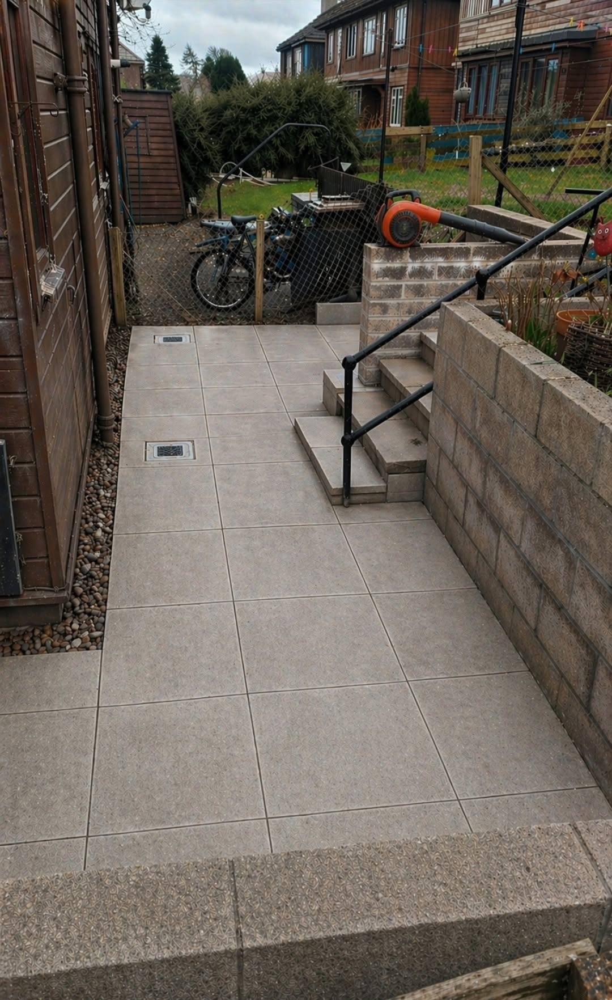
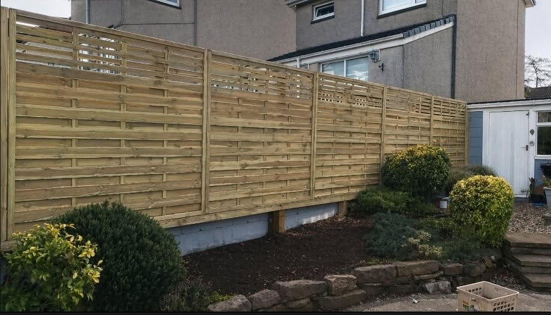
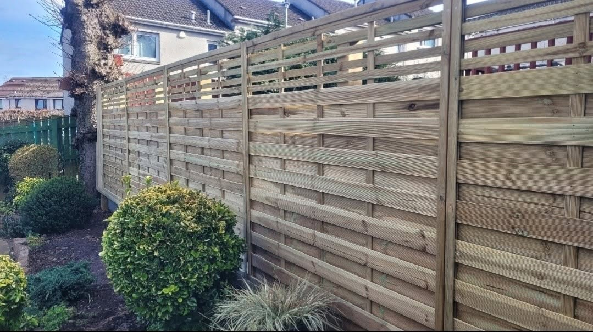
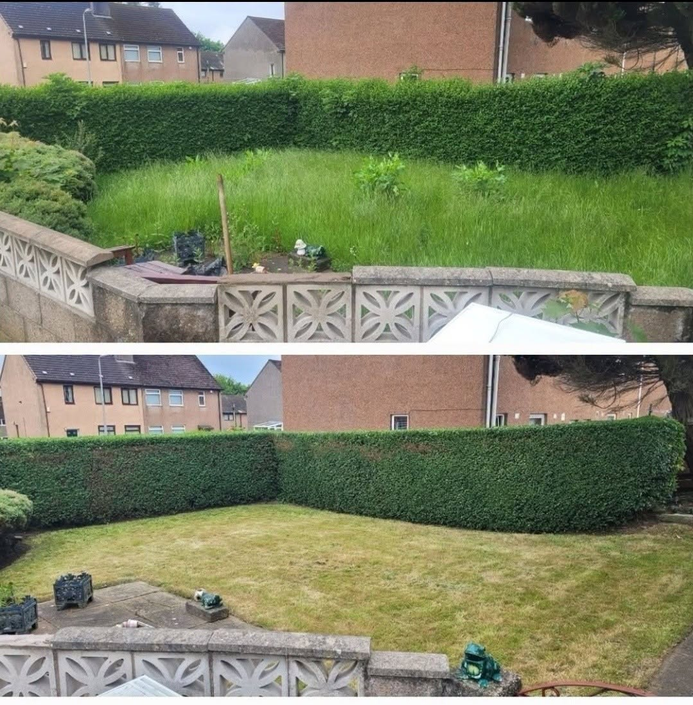
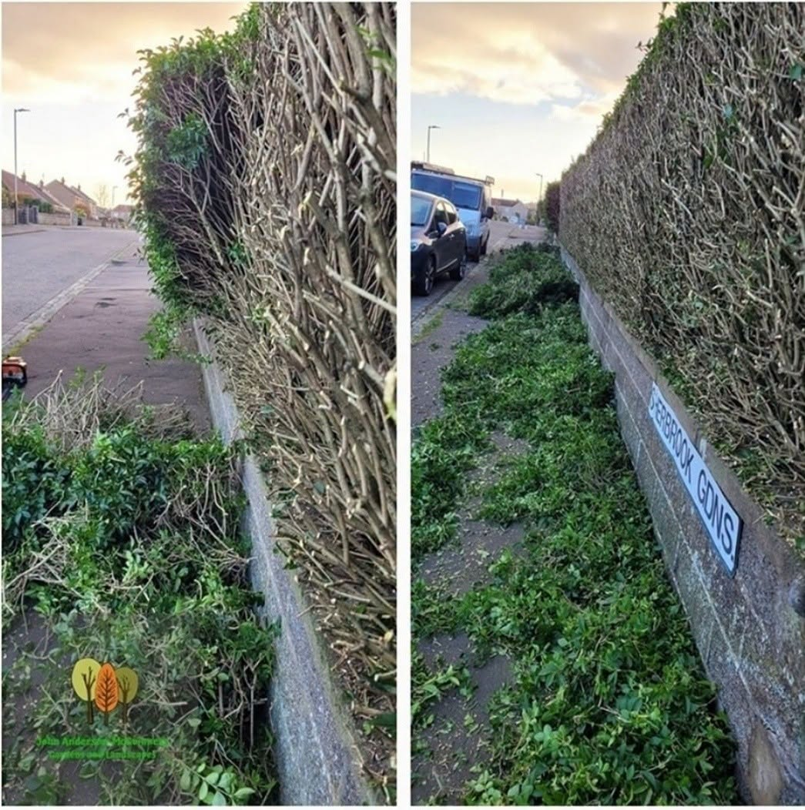
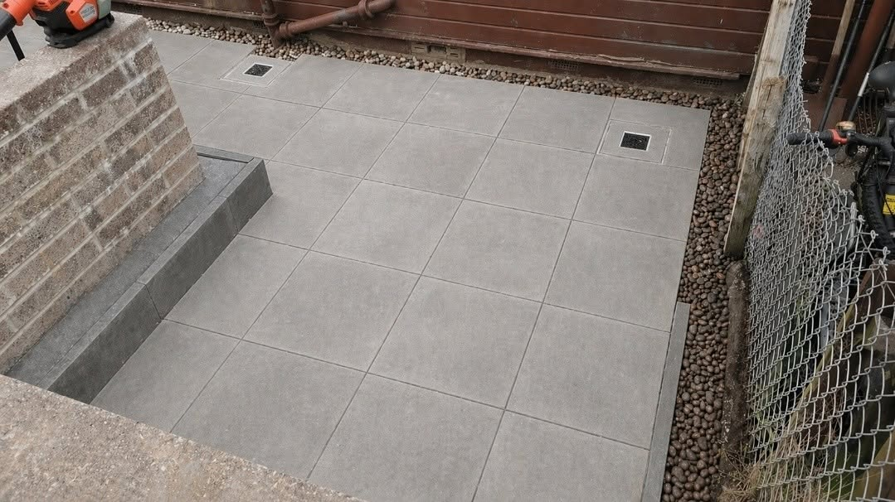

Garden maintenance
Grass cutting, edging, pruning, weeding and general tidy-ups.

LOCAL GARDEN & LANDSCAPING SERVICES
Local family-run garden and landscaping services across Dundee and surrounding areas — from regular maintenance and hedge cutting to fencing, patios and full garden tidy-ups.
WHAT WE DO
From regular upkeep to one-off improvements, the focus is simple: useful work, tidy results and no unnecessary fuss. Based in Dundee and covering the surrounding area.
Grass cutting, edging, pruning, weeding and general tidy-ups.
Shaping, reductions and heavier cut-backs for overgrown boundaries.
New timber fencing and screening for privacy and a neater finish.
Practical paved areas, paths and access improvements.
Regular mowing and seasonal work to keep grass manageable.
Cut-backs and clean-ups for gardens that have got out of hand.
RECENT WORK
A finished tiled walkway with steps, drainage and retaining detail — designed to be practical first and still look sharp.
Ask about a similar job →
FENCING
Fresh timber screening gives this boundary a cleaner look while improving privacy around the garden.
Ask about fencing →

BEFORE & AFTER
These are the kind of straightforward jobs that make the biggest visual difference quickly.



WHY CHOOSE US
John Anderson-McGuinness Gardens & Landscapes Ltd is a local family-run business helping homeowners across Dundee and nearby areas keep outdoor spaces tidy, practical and easy to enjoy.
GET A QUOTE
Call or send a few photos on WhatsApp and explain what you need doing.
Based at 361 Kingsway, Dundee, DD3 8LG.
Covering Dundee, Angus, Perth, Lundie, Kirriemuir, Carnoustie, Monifieth and Forfar.